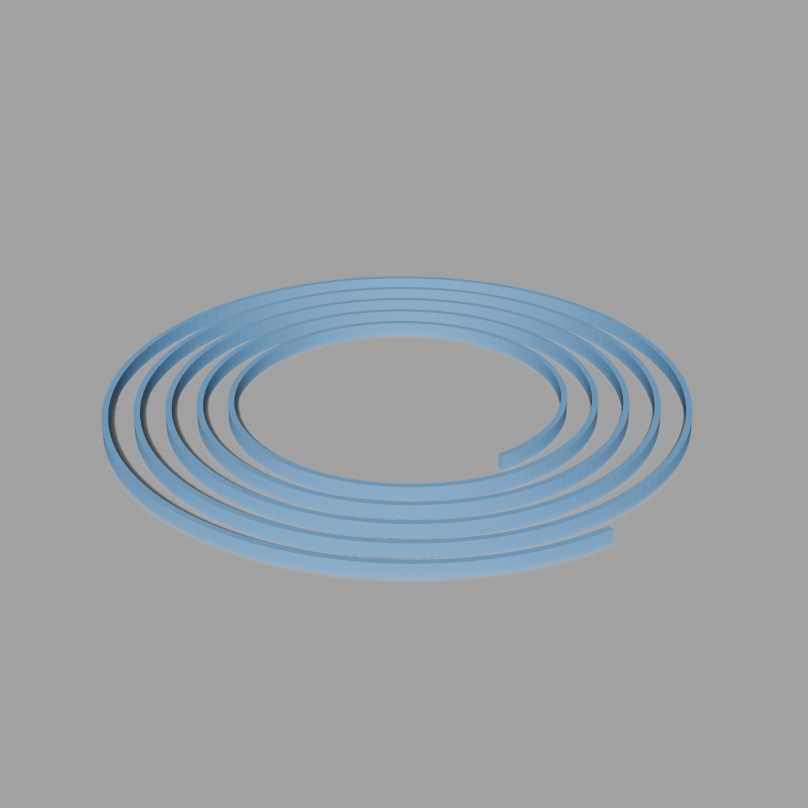
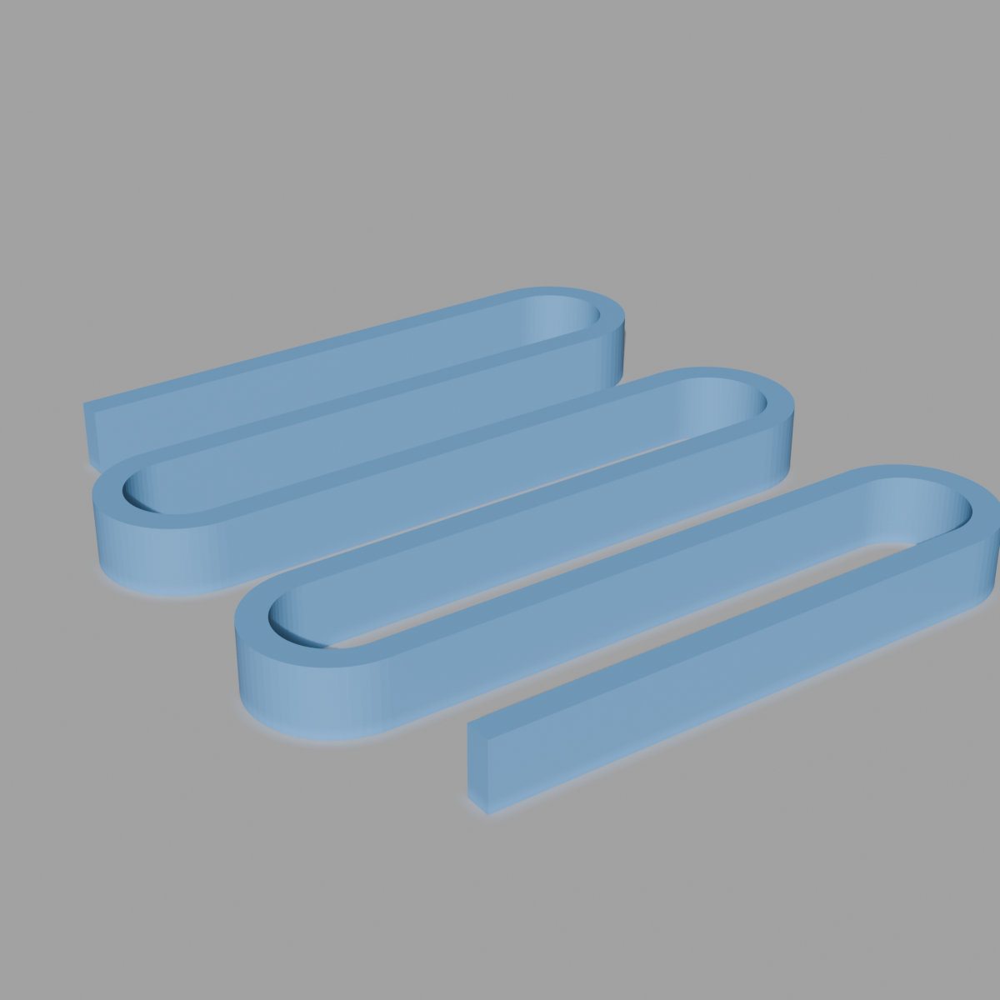

Two primitives, springs/hairspring.py and springs/serpentine_spring.py. Both generate a single flat, printable spring mesh from a swept ribbon cross-section — otherwise they don't share code, math, or a common geometry model (one's a spiral, one's a zigzag). See ../CONVENTIONS.md for the family/primitive pattern this doc follows.
Primitives in this family
| Primitive | File | Shape |
|---|---|---|
| Hairspring | springs/hairspring.py | Archimedean spiral ribbon |
| Serpentine spring | springs/serpentine_spring.py | Zigzag with rounded U-bends |
Conventions
- Both fully self-contained — no shared helper module, no
bmech_*stamping, no Match Target system. Neither file imports from the other or from any siblingmechanisms_coremodule. - Both build a flat 2D ribbon path (a centerline offset into outer/inner edges) rather than sweeping a profile curve — the ribbon's thickness dimensions are direct geometry inputs, not a Solidify modifier, except where noted below.
- Neither generator has a print-shrinkage FDM compensation property — no
*_compensation_mmfield anywhere in this family. Thestrip_width/strip_thickness/strip_heightproperties on both primitives carry FDM-driven minimum values (print-line-width floors like 0.4mm/0.2mm), but those are clamped inputs, not additive shrink-compensation offsets the way the fastener and gear families use the term. Don't go looking for a compensation field here — there isn't one. - Validation in both files follows the same soft pattern:
draw()shows ERROR-icon labels for degenerate combinations of inputs, but neither file actually cancels on most of them — values get silently clamped inexecute()instead (e.g. a too-small gap or too-narrow leg length is floored to a small positive number rather than blocking the operator). Check each primitive's doc for the one or two cases that genuinely do cancel. - Both output exactly one object per call, at the 3D cursor (no parenting-empty option, unlike bearings/planetary gear sets — there's only ever one part to place).
Primitives

Hairspring
A flat Archimedean-spiral ribbon — the kind of spring used in mechanical clock balance wheels. See README.md for family-wide notes.

Serpentine Spring
A flat zigzag spring — straight legs connected by rounded U-bends, compressing along one axis. See README.md for family-wide notes.